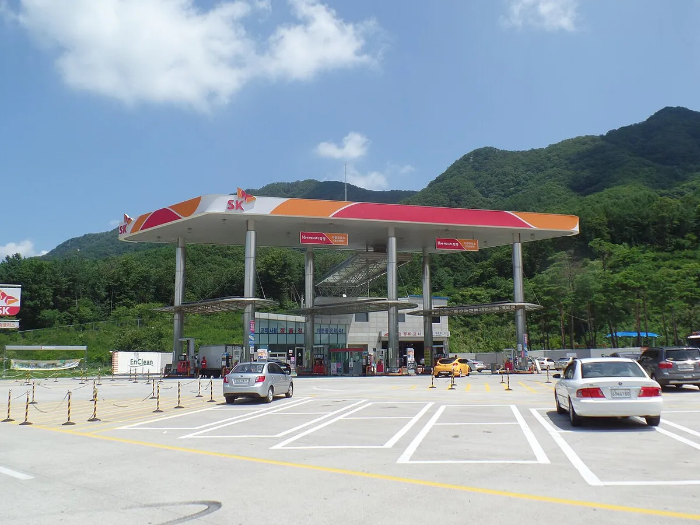
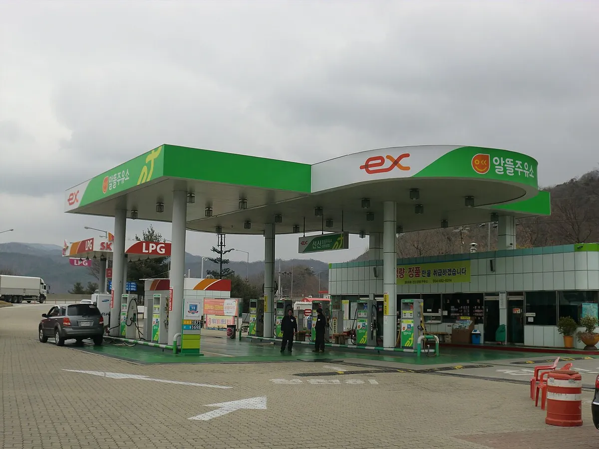
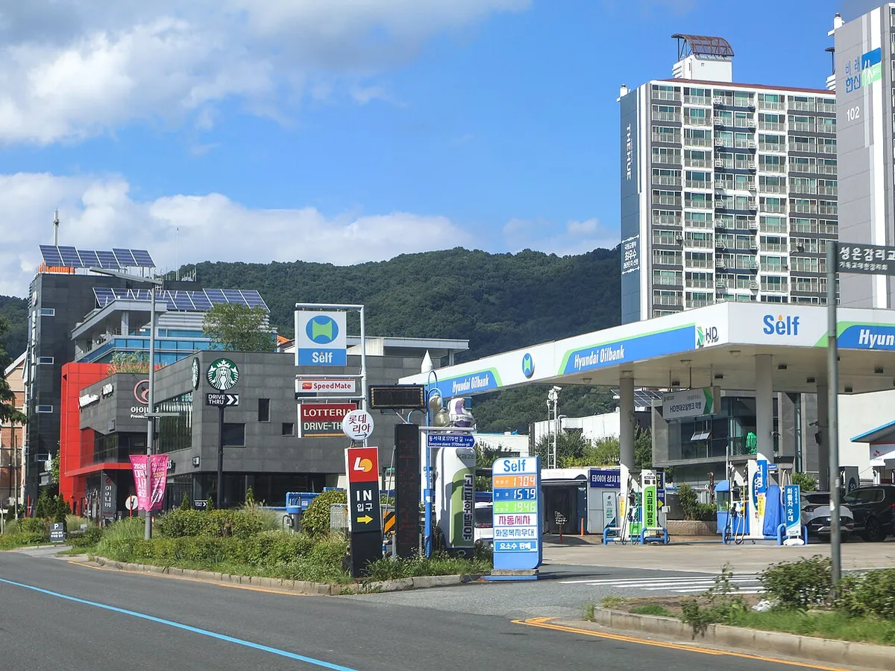

▲ 주유 영수증의 리터당 단가를 확인하면 유류세 인하 반영 여부를 짐작할 수 있다 ⓒ CarPrism (AI 생성 이미지)
"유류세 인하, 또 연장됐다는데 그래서 내 주유비는 얼마나 달라지나?" 정부는 9월 18일 휘발유 15%, 경유·부탄 25%인 유류세 인하율을 그대로 둔 채 적용 기간을 11월 30일까지 두 달 늘린다고 발표했다. 이 글은 언론이 인용한 정부 발표 내용을 교차 확인해 정리하고, 연 주행거리별 주유비 영향과 주유비를 줄이는 방법을 계산표로 풀었다. 재정경제부 보도자료 원문은 직접 열람하지 못했고, 여러 매체 보도가 일치하는 사실만 확정 표기했다. 연비·주행거리는 모두 계산을 위한 가정이다. (확인 기준일 2026년 10월 1일)
1. 이번 연장, 확인된 사실부터
정부는 9월 18일 비상경제본부 회의 겸 경제관계장관회의에서 연장을 결정했다고 보도됐다. 이투데이 등은 재정경제부가 연장을 발표했고, 교통·에너지·환경세법과 개별소비세법 시행령 개정이 필요하다고 전했다. 시행령 개정안은 9월 29일 이재명 대통령 주재로 청와대에서 열린 제42회 국무회의에서 의결된 것으로 확인된다. 아래 표는 매체 보도가 일치하는 수치만 모았다.
| 구분 | 휘발유 | 경유 | LPG 부탄 |
|---|---|---|---|
| 인하율(유지) | 15% | 25% | 25% |
| 현재 리터당 세액 | 698원 | 436원 | 152원 |
| 인하 전 대비 절감 | 122원 | 145원 | 51원 |
| 인하 전 세액(현재 세액+절감액 단순 합산) | 820원 | 581원 | 203원 |
| 50L 주유 시 절감 | 6,100원 | 7,250원 | 2,550원(51원×50, 직접 계산) |
📍 시행일은 어떻게 확인했나
적용 기간은 10월 1일부터 11월 30일까지로 보도됐고, 9월 29일 국무회의 의결 보도로 후속 절차가 마무리된 것으로 확인했다. 다만 관보나 시행령 조문 자체는 열람하지 못했다. 인하 전 세액은 보도된 현재 세액에 절감액을 더한 단순 계산이며 법정 세율표 원문과 대조하지는 못했다.

▲ 서울양양고속도로 가평휴게소 주유소. 인하된 유류세는 정유사 공급 단계에서 반영돼 가격표에 녹아든다 (소비자가 따로 신청할 필요 없음) ⓒ Jhcbs1019 / Wikimedia Commons (CC BY-SA 4.0)
소비자가 따로 신청할 것은 없다. 다만 세금 인하분이 판매가에 얼마나 빠르게 반영되는지는 주유소마다 재고 소진 시점이 달라 확인하지 못했다.
2. 왜 또 연장했나, 끝나면 얼마나 오를까
정부 관계자는 중동 정세 불안과 국제 유가 변동성이 이어지는 점, 국내 물가 안정과 서민 부담 완화를 우선 고려했다고 설명했다. 인하율은 3월 말 확대됐다. 당시 보도에 따르면 휘발유 7%에서 15%, 경유 10%에서 25%로 늘면서 리터당 세액이 휘발유 763원에서 698원, 경유 523원에서 436원으로 낮아졌다. 이후 여러 차례 연장을 거쳐 이번이 11월 30일까지다. 유류세 인하는 2021년 11월 시작된 것으로 보도됐다.
9월 30일 기준 오피넷 전국 평균은 휘발유 1,858.01원, 경유 1,843.39원으로 보도됐고, 9월 4주(9/20~24) 주간 기준으로 휘발유·경유 판매가격은 19주 연속 하락했다고 전해졌다. 가격이 내려가는 중에도 세금 인하를 유지한다는 점이 이번 결정의 특징이다.
| 구분 | 현재 전국 평균(9/30) | 세금만 인하 전으로 돌아갈 때 증가분 | 단순 추정 가격 |
|---|---|---|---|
| 휘발유 | 약 1,858원 | +122원 | 약 1,980원 |
| 경유 | 약 1,843원 | +145원 | 약 1,988원 |
이 표는 세금 증가분이 판매가에 전부 즉시 반영된다고 가정한 추정이다. 실제 가격은 국제 유가, 환율, 주유소 재고에 따라 달라진다. 12월 이후 추가 연장할지, 인하율을 조정할지는 정부가 국제유가·국내 물가·중동 정세를 보고 판단하겠다고 밝혔을 뿐 아직 결정되지 않았다. 앞선 개소세·유류세 연장 흐름은 개별소비세·유류세 연장 기사에서 다룬 바 있다.
3. 내 차 연간 주유비에 얼마나 영향을 줄까
유류세 인하 효과는 많이 달릴수록 커진다. 아래 표는 휘발유 연비 12km/L, 경유 연비 14km/L를 가정하고, 9월 30일 전국 평균 가격으로 연간 주유비와 인하 효과(부가세 포함)를 계산한 값이다. 연비는 차종에 따라 다르므로 실제 연비로 바꿔 계산하면 된다.
| 연 주행거리 | 휘발유 연료량 | 휘발유 연 주유비(1,858원) | 휘발유 인하 효과(122원) | 경유 연료량 | 경유 연 주유비(1,843원) | 경유 인하 효과(145원) |
|---|---|---|---|---|---|---|
| 5,000km | 약 417L | 약 77.4만원 | 약 5.1만원 | 약 357L | 약 65.8만원 | 약 5.2만원 |
| 10,000km | 약 833L | 약 154.8만원 | 약 10.2만원 | 약 714L | 약 131.6만원 | 약 10.4만원 |
| 15,000km | 약 1,250L | 약 232.3만원 | 약 15.3만원 | 약 1,071L | 약 197.5만원 | 약 15.5만원 |
| 20,000km | 약 1,667L | 약 309.7만원 | 약 20.3만원 | 약 1,429L | 약 263.3만원 | 약 20.7만원 |
연 1만km를 달리는 운전자라면 이번 두 달 연장분(연간의 2/12) 효과는 휘발유·경유 모두 약 1.7만원 수준이다. 한 보도는 하루 40km, 연비 10km/L를 가정해 월 절감액을 경유차 1만7,400원, 휘발유차 1만4,600원으로 계산했는데 같은 방식이다. 경유는 인하율이 높아 연비 차이를 감안해도 절감액이 더 크게 나온다. 다만 이 효과는 "연장이 안 됐을 때 비해 오르지 않는 금액"이지 가격이 내려가는 금액이 아니라는 점은 알아 두자. 연료비 부담이 큰 차종은 월 주유비가 큰 국산 SUV 기사도 참고할 만하다.
4. 휘발유·경유·LPG·전기, 100km 달리면 얼마나 들까
연료별 비교는 연비 가정에 따라 결과가 크게 달라진다. 아래 표는 확인된 가격에 임의의 연비를 곱한 예시이며, 특정 차종의 실제 비용이 아니다. LPG는 오피넷 9월 6일 기준 자동차부탄 평균 1,098.57원이라는 자료만 확인해 썼다(현재 가격은 확인 못 함).
| 연료 | 단가 근거 | 가정 연비 | 100km 비용 |
|---|---|---|---|
| 휘발유 | 1,858원/L (9/30 오피넷) | 12km/L | 약 15,480원 |
| 경유 | 1,843원/L (9/30 오피넷) | 14km/L | 약 13,160원 |
| LPG | 1,098.57원/L (9/6 오피넷) | 9km/L | 약 12,210원 |
| 전기(공공 완속) | 295.0원/kWh (8/1 개편 요금) | 5km/kWh | 약 5,900원 |
| 전기(공공 100~200kW 급속) | 348.4원/kWh (8/1 개편 요금) | 5km/kWh | 약 6,970원 |
| 전기(200kW 이상 초급속) | 393.1원/kWh (8/1 개편 요금) | 5km/kWh | 약 7,860원 |
📍 숫자를 읽을 때 주의할 점
전기 요금은 기후에너지환경부가 8월 1일부터 공공 충전요금을 5단계로 개편했다는 보도를 기준으로 했고, 집 충전·민간 충전 요금과 할인 카드 적용값은 확인하지 못했다. 전기차 전비와 LPG 차량 연비도 차종마다 다르다. 유류세 인하는 전기 요금과 무관하므로 인하가 끝나면 내연기관 쪽 부담만 커지는 구조다. 기름값 상승 때 운전자들이 차를 바꿀 의향을 조사한 전기차·하이브리드 전환 설문 기사가 참고가 된다.
5. 주유비 줄이는 방법 — 알뜰주유소부터 가격 비교까지
세금 인하와 별개로 주유소를 고르는 것만으로도 리터당 단가가 달라진다. 10월 1일 보도된 한국석유공사 자료(국회 제출 자료 인용)에서 정유사 주유소 평균은 1,639.54원, 알뜰주유소 평균은 1,552.16원으로 약 87원 차이가 났다고 한다. 다만 오피넷 9월 4주(9/20~24) 상표별 평균으로 보면 GS칼텍스 1,861.5원, 알뜰 1,845.9원(휘발유 기준)으로 격차가 약 16원이어서, 87원은 현재 격차로 읽기 어렵다. 브랜드별로는 SK에너지 1,650.87원, GS칼텍스 1,644.32원, 에쓰오일 1,631.91원, HD현대오일뱅크 1,631.07원, EX알뜰 1,508.59원이었고 SK와 EX알뜰의 격차는 142.28원이었다. 다만 이 자료의 가격 기준 시점과 산정 방식은 확인하지 못했고, 같은 시기 오피넷 전국 평균(1,858원)과 수준이 달라 절대 가격이 아니라 브랜드 간 격차 참고용으로만 읽어야 한다.

▲ 중부내륙고속도로 선산휴게소(양평방면) 알뜰주유소. 촬영 시기가 오래돼 현재 간판·시설과 다를 수 있다 ⓒ hyolee2 / Wikimedia Commons (CC BY-SA 3.0)
| 방법 | 확인된 내용 | 주의점 |
|---|---|---|
| 알뜰주유소 | 정유사 주유소 평균보다 약 87원 낮다는 보도(10/1, 석유공사 자료 인용, 기준 시점 불명, 오피넷 9월 4주 기준은 약 16원) | 서울은 418곳 중 10곳(2.4%), 경기 2,241곳 중 156곳(7.0%), 전남 822곳 중 164곳(20.0%)으로 지역 편차가 크다 |
| 셀프주유소 | 직원 없이 직접 주유하는 구조라 가격표가 낮은 곳이 많다고 알려졌다 | 셀프·풀서비스 리터당 격차의 공식 통계는 확인 못 함. 오피넷에서 지역 가격을 직접 비교하자 |
| 가격 비교 사이트 | 한국석유공사 오피넷에서 지역·브랜드별 가격 조회 가능 | 표시 가격과 실제 결제가가 다를 수 있으니 영수증 단가 확인 |
| 카드 주유 할인 | 카드사별로 리터당 할인·청구 할인이 있다 | 전월 실적·할인 한도·적용 주유소 조건은 카드마다 달라 수치는 확인하지 못했다 |
| 경차 유류세 환급 | 경차 소유자는 연 30만원 한도 환급 (아래 6장) | 경차사랑카드로 결제해야 적용 |
오피넷에서는 내 주변 최저가 주유소를 바로 찾을 수 있다. 주유소 선택에 따른 단가 차이는 기준 시점에 따라 크게 달라(수십 원~100원 안팎의 보도가 있다) 세금 인하 효과(122~145원)와 단순 비교하기 어렵다. 가까운 곳의 실시간 가격을 오피넷에서 비교하는 것이 확실하다. 오피넷 바로가기

▲ 대전 대덕구의 셀프 주유소. 가격을 비교할 때 셀프 여부도 함께 확인하면 좋다 ⓒ LandAndTree / Wikimedia Commons (CC0)
평소 연료비 절감 습관도 병행하면 좋다. 연비 관련 속설을 점검한 연비 운전 속설 기사를 함께 보면 도움이 된다.
6. 경차라면 — 유류세 환급(경차사랑카드)
배기량 1,000cc 미만 경형 승용·승합차 소유자는 환급용 유류구매카드(경차사랑카드)로 결제하면 연 30만원 한도에서 유류세를 환급받는다. 환급 단가는 휘발유·경유 리터당 250원, LPG 리터당 161원으로 안내된다. 한도는 매년 1월 1일~12월 31일 기준이다. 카드사 안내에서는 1회 6만원(주유 결제액 기준, 정책브리핑 안내), 1일 12만원까지 환급 대상이고 1회 48리터(자료에 따라 58리터)를 넘는 주유는 부정 사용으로 본다고 소개되지만 이는 2차 출처 기준이라 카드사 약관 확인이 필요하다.
▲ 경차 규격인 캐스퍼(왼쪽 캐스퍼 일렉트릭, 오른쪽 가솔린). 환급은 휘발유·경유·LPG 등 유류 구매에 적용된다 ⓒ Damian B Oh / Wikimedia Commons (CC BY-SA 4.0)
| 항목 | 내용 |
|---|---|
| 연 한도 | 30만원 |
| 한도 소진 리터(휘발유 250원 기준) | 300,000 ÷ 250 = 1,200L |
| 소진 주행거리(15km/L 가정) | 약 18,000km |
| 연 1만km 주행 시 환급(가정) | 약 667L × 250원 = 약 16.7만원 |
✅ 경차 환급 확인 포인트
· 현행 환급 특례는 일몰이 2026년 12월 31일로 안내되며, 2029년 12월 31일까지 3년 연장하는 개정안이 추진 중이라고 보도됐다(확정 여부는 확인 못 함)
· 유류세 인하와 환급 단가가 연동되는지는 확인하지 못했다
· 경차를 활용한 여행지 사례는 경차 여행지 기사에서 다뤘다
7. 11월 말을 앞두고 운전자가 할 일
인하가 끝날 가능성에 대비해 미리 많이 넣어 두려는 생각이 들 수 있지만, 연장 여부는 아직 모르는 데다 가격 흐름도 예측이 어렵다. 탱크를 평소보다 많이 채우기보다 단가 비교와 주유 습관이 더 확실한 절약 수단이다. 정부 발표는 11월 말 이후 판단이므로 11월 하순 뉴스를 확인하면 된다.
✅ 지금 해 볼 것
· 내 연비와 연 주행거리로 연간 인하 효과(리터당 122·145원) 계산
· 오피넷으로 근처 최저가·알뜰·셀프 가격 확인
· 경차라면 경차사랑카드 사용 여부와 연 한도 소진 현황 점검
· 11월 하순 12월 이후 연장·조정 발표 확인
· 영수증 리터당 단가로 실제 반영과 주유소별 차이 점검
8. 요약
유류세 인하는 11월 30일까지 2개월 연장되고, 인하율은 휘발유 15%, 경유·부탄 25%로 그대로다. 부가세 포함 효과는 리터당 휘발유 122원, 경유 145원, 부탄 51원이며 50L 주유 시 휘발유 6,100원, 경유 7,250원이다.
연 1만km를 달리면 이번 연장분(2개월) 효과는 휘발유·경유 모두 약 1.7만원 수준이고(가정 연비 기준), 인하가 끝나면 단순 추정으로 휘발유 약 1,980원, 경유 약 1,988원이 될 수 있다. 12월 이후 연장·조정은 정부가 11월 말 이후 판단한다.
세금 인하만 믿기보다 알뜰·셀프주유소 단가 비교, 경차 환급(연 30만원 한도)까지 챙기는 편이 확실하다. (기준일 2026년 10월 1일)